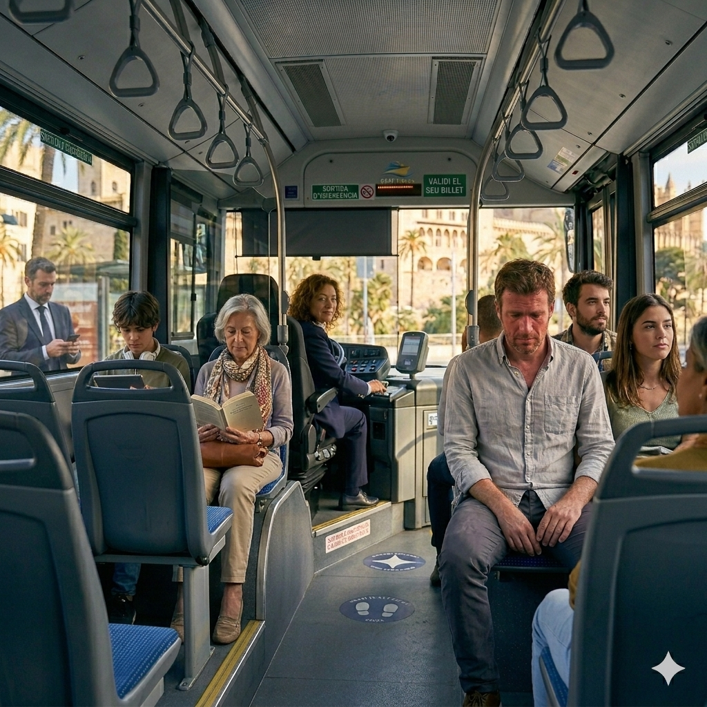
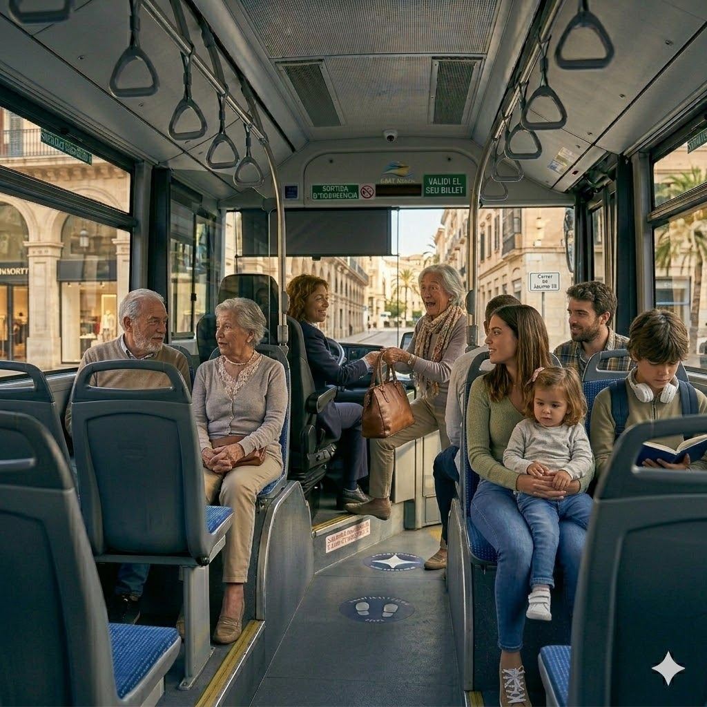
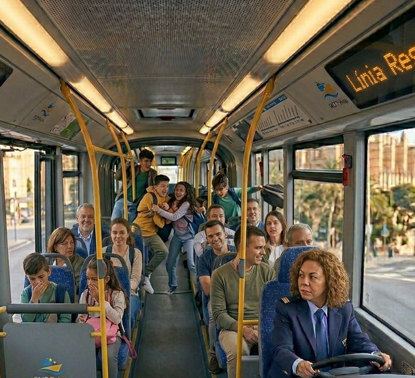
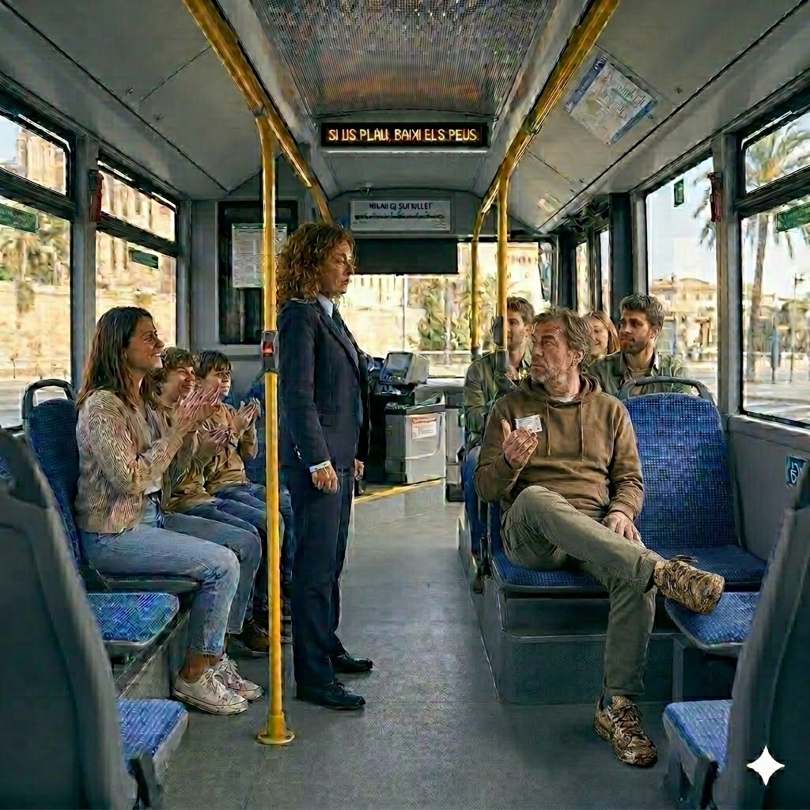

Exercici 1 · Omple els buits
Prem el botó de cada imatge per escoltar l’escena.

El primer viatge d’aquest matí, un home ha pujat sense ni diners. S’ha posat vermell i ha començat a demanar . Li he dit que no passava res i l’he deixat . Ell m’ha donat les gràcies i s’ha al final. De vegades un petit ho canvia tot.

A la del mercat, una dona ha corrent i ha deixat la bossa a sobre del . Quan me n’he adonat, ja era lluny. He guardat la bossa meu. Al cap de dues parades, a pujar, tota nerviosa. la bossa i s’ha posat a plorar d’agraïment.
Dos allots estrangers i m’han preguntat com arribar al museu. No català, però ho he entès. Els hi he explicat que a la tercera parada i després el riu. M’han i m’han dit gràcies.
A l’hora punta, l’autobús anava ple de gom a gom. La gent a la porta i no podien pujar més. Els he cridat: “Per favor, cap al fons”. M’han fet cas .

Un grup de nins ha pujat al i han començat a córrer cridant. i els he dit en veu : “Nois, aquí no es juga. Asseguts i en ”. Els passatgers m’han donat les gràcies amb la .

He vist per l’espill que un home tenia els peus bruts seient. He parat l’autobús i . Li he dit: “Els seients són per ”. Ell ha posat mala , però ho ha fet.
Exercici 2 · Les reaccions del conductor
1. Què fa el conductor quan l’home no té diners?
2. Què fa amb la bossa oblidada?
3. Com ajuda els turistes?
4. Per què utilitza l’altaveu?
5. Quin to utilitza amb els nens?
6. Què fa quan veu els peus damunt del seient?
7. Com reaccionen els passatgers?
8. Quin adjectiu descriu millor el conductor?
Exercici 3 · Viatjar en autobús
Escriu la forma correcta dels adjectius. Cada adjectiu només es pot utilitzar una vegada.
Viatjar cada dia en autobús és més agradable quan els passatgers són i pensen en els altres. Els conductors han de ser persones perquè sovint han de resoldre situacions difícils. Quan hi ha crits o molt soroll, el trajecte pot resultar per a tothom. També és important parlar de manera i mantenir un ambient dins del vehicle.
Un conductor sap reaccionar amb calma i prendre decisions ràpides quan hi ha situacions dins del bus.
Expressió escrita
Creus que és difícil treballar de conductor d’autobús? Explica com s’haurien de comportar els passatgers.